Flux là cái quái gì nhỉ
Flux là một kiến trúc cho cho font-end do Faceebook phát triển với mục đích giải quyết chính những vấn đề Facebook gặp phải. Kiến trúc này giúp quản lý các hành động (actions) trạng thái (state) của ứng dụng một cách đồng bộ và dễ tiên đoán (predicable), nhất là với các ứng dụng có cấu trúc phức tạp như Facebook. bài viết này sẽ giới thiệu về Flux cũng như cách hoạt động của nó.
Vấn đề mà Flux giải quyết
trước tiên, ta sẽ điểm qua một số vấn đề mà Flux giải quyết. Flux là một mẫu thiết kế để xử lý dữ liệu cho ứng dụng, Flux và React đực phaát triển song song bởi Facebook. Và cũng được thiết kế để sử dụng chung với nhau, dù vậy bạn hoàn toàn có thể dùng Flux mà không cần đến React. Nó được phát triển để giải quết chính những vấn đề mà Facebook đạng gặp phải.
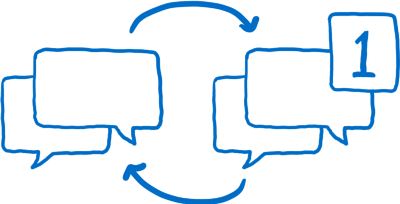
Một trong những vấn đề đó chính là bug trong phần thông báo (notification). Khi bạn đăng nhập vào Facebook bạn sẽ nhìn thấy các thông báo trên biểu tượng tin nhắn. rồi bạn click vào biểu tượng tin nhắn nhưng lại không có tin nhắn mới nào cả thông báo tin nhắn mbất đi, bạn lướt linh tinh một lát và lại có thông báo tin nhắn, nhưng khi click vào vấn chả có tin nào mới cả. chỉ là một vòng lặp của bug mà khổng thể giả quết với kiến trúc MVC thông thường.
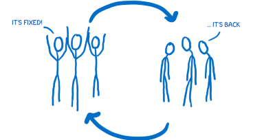
Không chó một vòng lặp bug, mà còn một òng lặp xay ra với Facebook team khi họ cố fix lỗi này và rồi một bg mới lại xuất hiện. một cuộc chiến không có hồi kết gữa dev team và bug.
vậy nên Facebook muốn tìm cách để thoát khỏi cái vòng luẩn quẩn này. hộ không chỉ muốn fix bux một lần mà họ muốn một hệ thống dễ tiên đoán hơn và có thể dảm bảo rằng vấn đề được giải quyết một cách triệt để.
Bản chất của vấn đề
bản chất của vấn đề chính là cách mà luồng dữ liệu chạy qua ứng dụng.
Note: đây là những thứ mà tôi thấy được từ bản rút gọn mà họ đã trình bày, nhưng tôi tin chắc reawng kiến trục thục thế sẽ khác đôi chút.
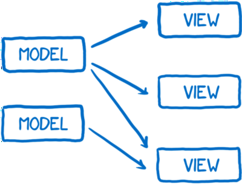
Ta có một vài model chịu trách nhiệm nắm giữ dât toàn bộ dữ liệu của ứng dụng để tầng view hiển thị ra.
bởi vì người dùng tương tác thông qua view, tầng view đôi khi cần cập nhật vào models thông qua input của người dùng. đôi khi model cũng cần phải cập nhật các model khác.
quan trọng nhất, đôi khi một vài hành động sẽ kéo theo một loạt các thay đổi trạng thái khác. có thể hình dung nó như chơi bòng bàn thặt khó để đóán được điể rơi của bóng trên bằn, cũng có thể ra ngoài.
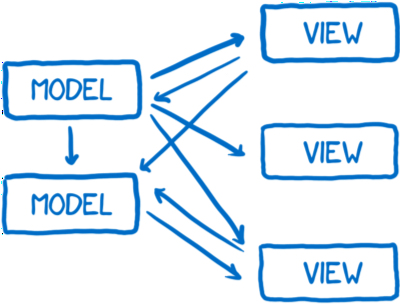
trên thực tế nhưng thay đổi này có thể xảy ra không đồng bộ, một thay đổi có thể kéo theo vài thây đổi khác mà không nhất thiết xảy ra đồng thời. Giống như ta ném một rổ bóng bàn cho 2 người chơi vậy bóng bạy khắp nơi và va chặm lẫn nhau.
nói chung là thật khó để theo dõi ddataa flow của ứng dụng. 😃
Giải pháp: luồng dữ liệu tuyến tính (unidirectional data flow)
vì vậy Facebook đã quyết định thử một kiến trúc khác, sao cho luồng dữ liệu chỉ chạy theo một hướng, khi bạn muống thêm một dữ liệu mới, luồng dữ liệu chạy lại từ đầu. '
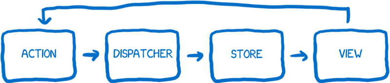
điều này thực sự rất hay… nhưng có lẽ nó không thực sự đơn giản như sơ đồ trên.
nột khi bạn đã hiểu Flux, biểu đồ này mới thực sự rõ ràng, vấn đề ở đây là nếu bạn xem qua docs mới nhất của Flux, tôi không nghĩ ràng biểu đồ này có thể giúp bạn hiểu được, biểu đồ chỉ giúp bạn có được cái nhìn toàn cảnh về hệ thống trức khi bạn đi vào tìn hiểu kỹ hơn từng thành phần của nó.
What helped me understand Flux better wasn’t a diagram like this, but instead thinking of the system in terms of different characters working together as a team to achieve a goal. So I want to introduce you to the cast of characters that I have in my head.
Hãy tưởng tượng các thành phần hệ thống như các nhân vật làm vệc chung với nhau để đạt được một mục tiêu chung. bây giờ tôi muốn giới thiệu với các bạn những nhân vật tôi đã hình dung ra.
giới thiệ các nhân vật
tôi sẽ giới thiệu các nhân vật và họ tương tác với nhau như thế nào.
Action creator (ông đánh máy)
nhân vật đầu tiên của chúng ta chính là action creator, người chịu trách nhiệm cho sinh ra tất cả các action của hệ thống, nơi mà tất cả cá thay đổi và các tương tác phải đi qua. Bất cứ khi nào bạn muốn thay đổi trạng thái hặc thay dổi view bạn phải goi đến ông này.
tôi nghĩ về action creator như ông đánh máy fax. mỗi khi bạn muốn gửi tin đi bạ phải đến gặp ông này và bảo ông nội dung muốn gử, người đánh máy sẽ định dạng lại tin nhắn sao cho toàn bộ phần còn lại của hệ thống có thể h ểu được .
ông đánh máy sẽ tạo một action bao gồm ám hiệu (type) và một khối dữ liệu (payload). ám hiệu sẽ là mooth trong số ám hiệu mà hệ thống đã ngầm định với nhau từ trước kiểu như MESSAGE_CREATE hay MESSAGE_READ.
Actions creator còn có một hiệu ứng phụ nữa, ông này biết tất cả các kiểu action . một dev mới vào tram chỉ cần mở file acrion creator lên là biết tất cả các action của hệ thống .
Once it has created the action message, the action creator passes that action off to the dispatcher.
khi ông này đánh máy xong, thông điệp sẽ được truyền đến Dispatcher.
Dispatcher (thằng đưa thư)
Thực chất Dispatcher bao gồm một loạt các đăng ký callback. giống như mông đưa thư, ông này giữ một danh sách các kho có thể nhận tin từu action creator. và chuyên thông điếp đến đó.
Ống này làm việc một cách không đồng bộ
đến tất cá các kho trong hệ thống, nếu bạn muốn thông điệp chir được gửi khi làm xong việc gì khácm bạn có thể quản lý dispatcher thực hiện chức năng này với hàm waitFor().
Dispatcher của Flux khác với dispatcher cưa các kiến trúc khác ở chỗ, thông điệp được gửi tới tất cả các kho không phân biệt action type là gì. điều đó có nghĩa tất cả các store đều nhận được cả các thông điệp và phải tự mình lịc xem mình cần nghe thưng thông điệp nào.
The store (kho)
Tiếp theo là store, store là nơi giữ tất cả các trạng thái của ứng dụng
, tất cả các trạng thái thay đổi logic đều nằm trong kho.
Store như một nhân viên kiểm soát kho vậy, tất cả các trạng thái phải thay đổi thông qua một củ thể, bạn không thể trực tiếp yêu cầu tahy đổi trạng thái được, đối tượng store sẽ không có setters mà chi có getters thôi. để thay dổi trạng thái bạn cần theo đúng trình tự… bạn cần tạo ra một action bằng acrion creator và gửi đi thông qua dispatcher.
Như đã đề cập ở trên, nếu Store đã đăng ký với dispatcher, mọi action sẽ được đến nó. bên trong mỗi store trường là một biểu thức switch phân loại acrion đầu vào thông qua type và thực hiện logic tương ứng. nếu action thuộc loại store quan tâm nó sẽ xứ lý action và trả lại một trạng thái tiếp theo của ứng ụng. nếu không store sẽ bỏ qua action này.
Một khi store đã cập nhật trạng thái, nó sẽ tung ra một sự kiện change, thông báo cho controller view rằng trạng thái đã bị thay đổi cần update lại.
controller view và view
View chính là giao diện ngưòi dùng, view được dựng dựa trên trạng thái, thể hiện trạng thái tới nhời dùng cũng như nhận tương tác của ngời dùng để tạo ra trạng thái mới.
View chỉ là giao diện, nó không hề biết gì về logic của ứng dụng, nó chỉ nhận lấy data và dựng thành giao diện ừng dùng có hể hiểu được (bằng HTML).
Controller view làm nhiệm vụ quản lý giữa store và view. Nó nhận lấy thông bao thay đổi trạng thái từ store. tập hợp những thay đổi và truyền trạng thái mới cho tất cả nhưng view nó quản lý.
So let’s take a look at how all of these characters work together.
Hãy xem qua mọi các thành phần làm việc với nhau thế nào nhé.
các thành phần tương tấc như thế nào
Setup
đầu tiên là phần setup: ứng đụng đưọc khởi tạo, việc vày chỉ dễn ra một lần.
- Store thông báo cho dispatcher mỗi khi có trạng thái thay đổi
2.rồi controller views yều cầu trạng thái mới nhất từ store.
- Khi store gửi trạng thái cho controller views, controller views gửi trạng thái tới các view để dựng giao diện.
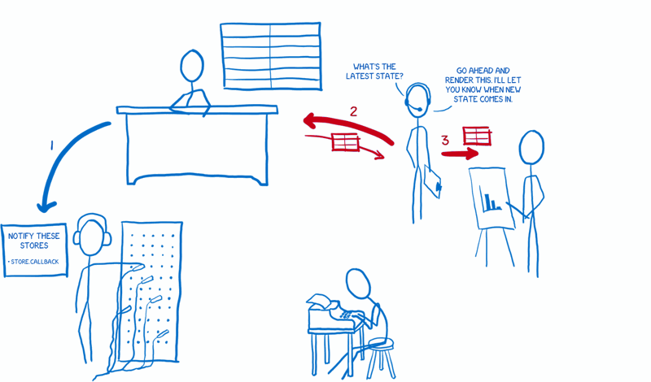
The controller views also ask the stores to keep them notified when state changes.
Controller views cũng đăng ký nhận thông báo khi trạng thái thay đổi.
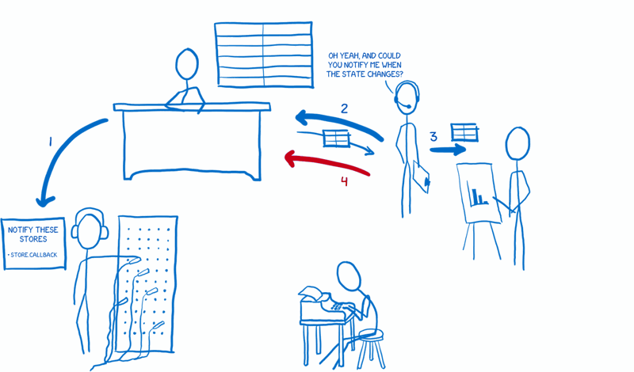
Luồng dữ liệu
Khi setup xong, ứng dụng sẽ sẵn sàng để nhận tương tác của người dùng, và mỗi khi có tương tác từ người dùng luồng dữ liệu sẽ bắt đầy chạy.
sự kiện từ hành từ tương tác sẽ được bắn ra.
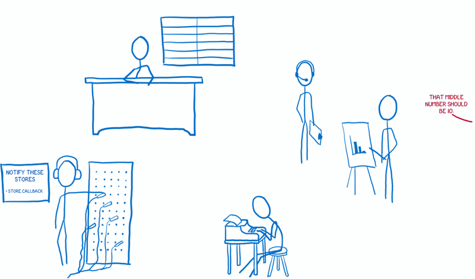
- view thông báo cho action creator chuẩn bị một action mới.
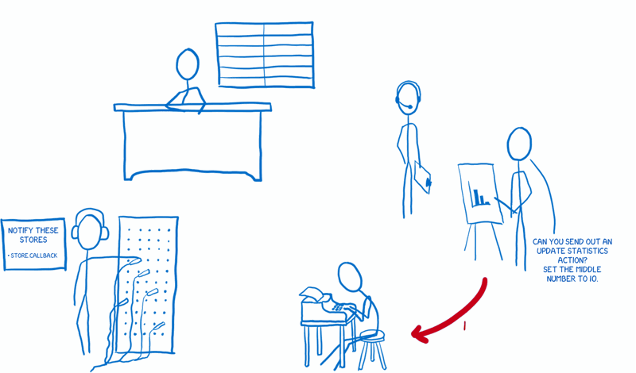
- action creator tạo ra action dựa trên tương tác và gỉư tới dispatcher.
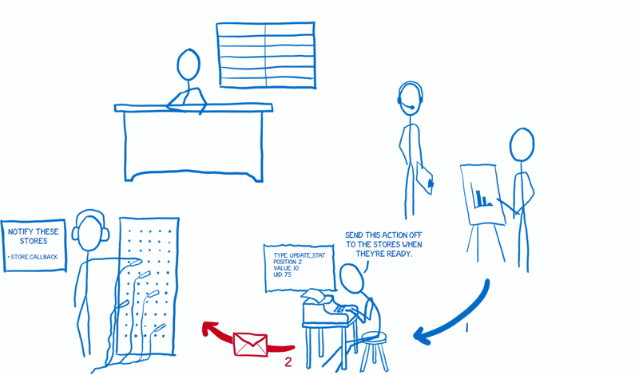
- Dispatcher giửi action tới store theo một hàng dợi (FIFO), mỗi store đều được thông báo với mọi action rồi store sẽ quết định có xử lý action hay không, và thay đổi trạng thái dựa vào đó.
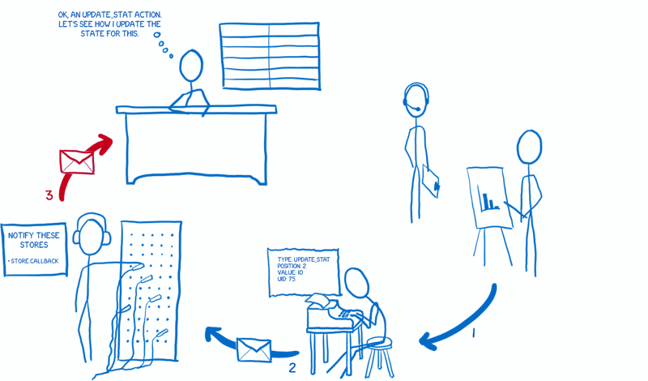
Một khi trạnh thái đã thay đổi, store gửi thông báo đến các controllers đã đăng ký với nó.
những controller views này yêu cầu lấy state mới từ store và tiến hành cập nhật trạng thái mới.
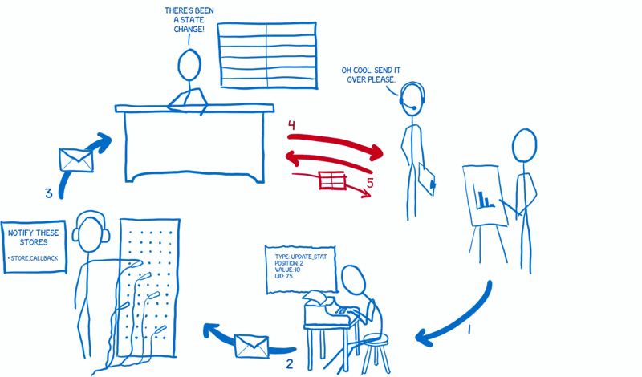
Hy vọng bài viết này giúp bạn hiểu hơn về Flux!
…
link bài viết gốc: tại đây